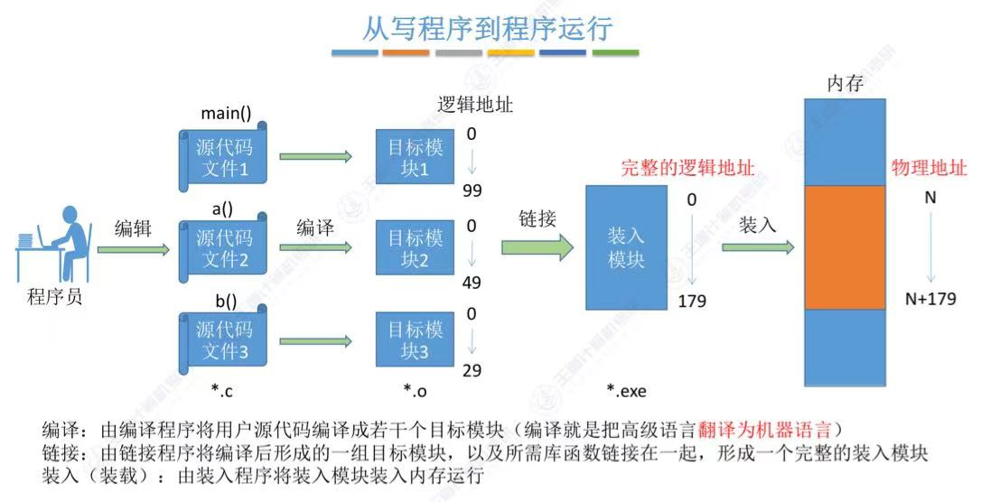

在c++中，有一种用法，名叫
函数重载，函数重载是c++中一个非常重要的特性，它允许程序员定义同名但参数列表不同的函数，这样可以方便地实现代码复用和提高程序的可读性。但是在学习过程中令我感到奇怪的是，C却并不支持这一做法。于是通过查阅资料，完成了此篇博客。
函数重载指的是在同一个作用域内，可以定义多个同名但参数列表不同的函数。例如：
如下是两个同名的add函数，功能是将两数相加并返回。
int add(int a, int b) {
return a + b;
}
double add(double a, double b) {
return a + b;
}
虽然都是add，但是它们的参数列表不同，一个是两个整数，一个是两个浮点数。当调用add函数时，编译器会根据实参的类型和数量来选择调用哪一个函数。例如：
int x = add(1, 2); // 调用int add(int, int)
double y = add(1.0, 2.0); // 调用double add(double, double)
这就是函数重载。函数重载的好处在于，可以让程序员使用同一个名字来表示多个不同的操作，这样做最浅显的好处就是给代码带来了美观。
函数重载一共有以下几种：
参数数量不同
void func(int a);
void func(int a, double b);
参数类型不同
void func(int a);
void func(double a);
参数顺序不同
void func(int a, double b);
void func(double a, int b);
使用引用或指针
void func(int &a);
void func(int *a);
常量参数与非常量参数
void func(const int a);
void func(int a);
不同的返回类型（仅限于与参数数量和类型不同的情况）
int func(int a);
double func(double a);
重点来啦：单纯通过返回类型的不同而构成重载是不可行的，必须还有参数上的区别。因为这样做编译器搞不明白你究竟想要使用的是哪个函数。
如：
int func(int a);
double func(int a);
编译器到底该调哪一个呢？
在c/c++中，要想将一个程序跑起来，就需要经过如下的几个阶段
预处理，编译，汇编，链接

图源王道2025操作系统讲义3.1
预处理是C++程序在编译过程中的第一步，它主要负责处理头文件、宏定义和条件编译等。在预处理阶段，预处理器会对函数的声明进行处理，通常，此文件是以.i为后缀。
编译器在编译阶段主要负责将源代码翻译成汇编代码。编译器通过分析源代码，将其转换为计算机可以理解的指令。汇编语言程序中的每条语句都以一种标准的文本格式确切的描述了一条低级机器语言指令。此时，文件后缀为.s。
在汇编阶段，编译器会将汇编代码翻译成机器代码。汇编器将.s文件翻译成机器语言指令，把这些指令打包成一种可重定位目标程序的格式，并将结果保存在目标文件.o中。.o文件是一个二进制文件，它的字节编码是机器语言指令而不是字符，如果我们在文本文件中打开.o文件，所呈现的就是一串串的乱码。在汇编阶段，会生成一份符号表（这个表很重要,每个目标文件都有一份符号表，可简单理解为函数或变量对应的实际内存地址）。
在链接阶段，编译器会将多个目标文件链接成一个可执行文件。
(拓展)此图给出了实现两个相邻数组元素交换功能的不同层次语言的描述 。在高级语言源程序中，可直观地用三个赋值语句实现;在经
编译后生成的汇编语言源程序中,可用4 个汇编指令 表 示 ， 其 中 ， 两 条 是 取 数 指 令 I w (l o a d w o r d )， 另 两 条 是 存 数 指 令 s w (s t o r e w o r d ); 在 经 汇编后生成的机器语言程序中，对应的机器指令是特定格式的二进制代码，例如，第一条Iw指令对应的机器代码为“1000 11000100 11110000000000000000”，这是一条MIPS体系结构中的指令，其中，高6位“100011” 为操作码，随后5位“00010” 为寄存器编号2，再后面5位 “01111” 为另一个寄存器编号，最后16位表示立即数0 。CPU能够通过逻辑电路直接执行这种二进制表示的机器指令。指令执行时通过控制器对指令操作码进行译码，解释成控制信号(control signal)控制数据通路执行，例如，控制信号ALUop= add 可以控制ALU进行加法操作，RegWr= 1 可以控制将结果写人寄存器。
而要解释为何c++支持函数重载，就需要说一说链接阶段。
链接过程就是将
多个输入目标文件(.o文件)加工合并成一个输出文件(可执行二进制文件)。在此阶段，可执行的二进制文件会对一些符号进行解析，调整一些地址。(注意：目标文件也是二进制，但操作系统并不允许直接执行！)
函数声明。#include<stdio.h>
int func(int a,int b);
int main(){
printf("hello!");
}
这也就意味着具体代码是什么样，或者存放在哪个内存块都是编译器目前不知道的。那么没有办法，只有先把函数的跳转地址设置为0，等到链接阶段再去修正。(为了找到这些要修正的函数，会生成重定位表，存放函数地址的偏移量。)
(扩展)重定位表（Relocation Table）：重定位表保存了程序中需要进行地址重定位的信息。在编译和链接过程中，代码和数据段的实际内存地址可能还未确定，因此在生成目标文件时，编译器会记录下哪些位置
需要在链接时进行修改。
所以链接其实就是将多个目标文件以及一些静态库等等组合成一个可执行文件。在此过程中还会进行地址修正等工作。
接下来用一个具体的例子来解释：
// a.c
int foo() {
return 42;
}
// b.c
extern int foo(); // 声明外部函数
int bar() {
return foo(); // 调用外部函数
}
编译时生成的总符号表：
| 符号 | 类型 | 地址 |
|---|---|---|
| foo | 函数 | 0x1000 |
| bar | 函数 | 0x2000 |
bar里的重定位表
| 段 | 偏移 | 符号 | 操作 |
|---|---|---|---|
| .text.bar | 0x04 | foo | 重定位 |
在链接阶段，链接器会通过重定位表中的信息，将 b.c 中对 foo 的调用地址修改为 foo 在内存中的实际地址（假设是 0x1000）。
如何在符号表里找到想要的函数，就需要借助命名规则。
Linux下的g++的命名规则最简单，常常修饰后变成【_Z+函数长度+函数名+类型首字母】。
c++存在这样的函数名修饰规则，而c没有，这就是c++可以实现重载的关键。
规则规定：在 c++ 中，为了支持函数重载，编译器会对每个
函数名进行修饰，从而生成唯一的符号来标识该函数。函数名修饰规则是由编译器定义的，不同的编译器可能会采用不同的修饰规则。Microsoft Visual C++ 编译器将函数名后面加上下划线和参数个数，参数类型和参数个数之间用 @ 分隔。例如，函数 void foo(int a, float b) 的修饰名为 _foo@8。
如：
汇编阶段生成的符号表将会记录函数的名称与地址。
形参个数，类型，顺序也添加进考虑范围，以形成新的函数名。有一点需要注意，在编译的过程中，是不会执行用户的自定义函数的。
在链接的阶段，链接器会解析
所有的符号，并将被调用的函数的目标代码包含在可执行文件中。当我们在一个源文件中定义一个函数时，编译器会将该函数编译成目标代码，并在生成的目标文件中生成相应的符号。如果在其他源文件中调用了该函数，链接器会在链接阶段将相应的目标文件合并成一个可执行文件，并将各个符号解析成实际的地址，从而使得程序能够正确地执行。
此时又会出现一个问题，如果在团队开发里，有人用c，有人用c++，那么此时在这种混合模式下开发，由于c和c++编译器对函数名字修饰规则不同，可能就会导致链接失败！
针对这样的问题，可以采取在函数前加extern "C"的办法，也就是告诉编译器将该函数按照c语言规则来编译。